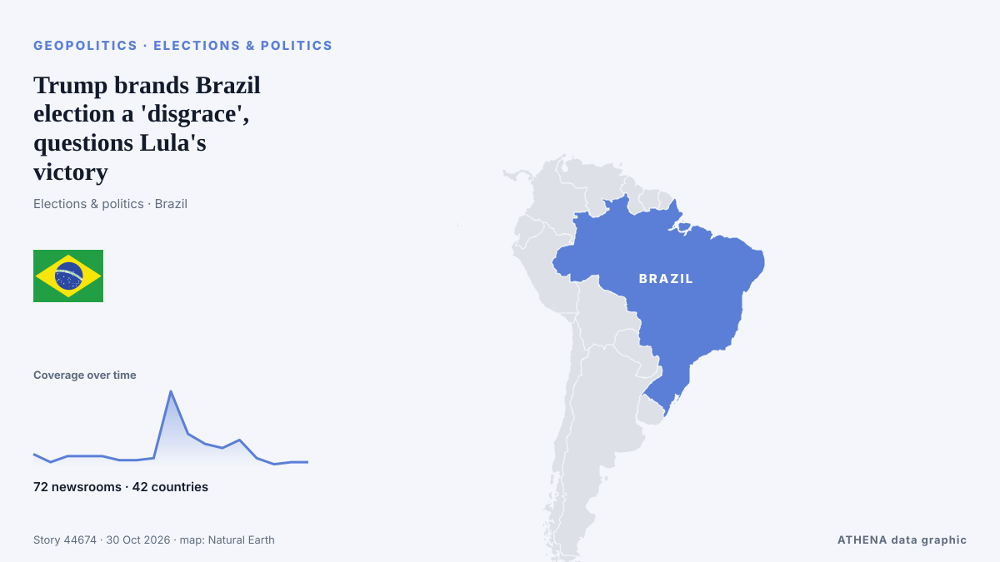

Trump brands Brazil election a 'disgrace', questions Lula's victory

The world’s fourth-largest democracy has now bucked the trend of far-right gains, and is a symbol that democrats elsewhere will not ignore. from Scroll.in
Reported independently by 72 outlets in 42 countries since 26 Oct, first by Scroll.in; coverage is still spreading. ATHENA rates the risk elevated (4.1/10), driven mainly by the severity of the harm described and its geographic and sector reach. Confidence is 89% (high), with 72 independent outlets corroborating it and an average source reliability of 74%.
Why it matters: Security and diplomatic developments can shift alliances, trade and markets well beyond the countries directly involved.
What changed: 21 new reports from 17 newsrooms in the 24 hours to 30 Oct.
First reported as: Lula’s vote count highest ever for a presidential candidate in Brazil
At a glance
Selected, scored and written by ATHENA's published methodology. No editor intervenes in individual events. How this is produced ›
| 26 Oct 16:30 UTC | 6 |
|---|---|
| 26 Oct 22:30 UTC | 2 |
| 27 Oct 04:30 UTC | 5 |
| 27 Oct 10:30 UTC | 5 |
| 27 Oct 16:30 UTC | 5 |
| 27 Oct 22:30 UTC | 3 |
| 28 Oct 04:30 UTC | 3 |
| 28 Oct 10:30 UTC | 4 |
| 28 Oct 16:30 UTC | 37 |
| 28 Oct 22:30 UTC | 16 |
| 29 Oct 04:30 UTC | 11 |
| 29 Oct 10:30 UTC | 9 |
| 29 Oct 16:30 UTC | 13 |
| 29 Oct 22:30 UTC | 4 |
| 30 Oct 04:30 UTC | 1 |
| 30 Oct 10:30 UTC | 2 |
| 30 Oct 16:30 UTC | 2 |
| 28 Oct 16:45 UTC | 4.7 |
|---|---|
| 28 Oct 16:48 UTC | 4.1 |
| 29 Oct 09:06 UTC | 4.1 |
| 30 Oct 16:46 UTC | 4.1 |
Why these numbers
Importance
Risk
Confidence
The reporting — who reported it, and when
headline as published · opens the original- Scroll.in · IndiaLula’s ‘miracle’ victory buys time for Brazil, resonates globally amid rise of far-right
- Agência Brasil (English) · BrazilLula’s vote count highest ever for a presidential candidate in Brazil
- Anadolu Agency (English) · TurkeyUN chief welcomes Brazil’s presidential election, takes note of Serbia vote
- PBS NewsHour · United StatesLula bucks regional shift to the right and denies Trump a powerful ally in Brazil
- Foreign Policy · United StatesLula Defies Latin America’s Pro-Trump Wave
- The Jerusalem Post · IsraelTrump denies discussing Netanyahu request for another endorsement: ‘I never spoke about it’
- Rappler · PhilippinesLessons for the Philippines: AI content surge bypassed Brazil’s election rules — report
- Xinhua (English) — page reader · ChinaBrazilian vice president rejects Trump's claim of election manipulation
- The Korea Times · South KoreaLula responds to Lee's congratulations on 4th presidential win
- The Rio Times · BrazilPetrobras Sheds US$24B in Value on Lula Win
- Korea Herald · South KoreaLee suggests ways around legislative delays in lowering juvenile criminal age
- The Korea Times · South KoreaLee, Lula swap warm words after Brazil election
- Anadolu Agency (English) · TurkeyOPINION - Brazil has chosen, and Lula must deliver
- Cyprus Mail · CyprusDmytro Rukin on Brazil’s new FX rules: what changes for US companies selling to Brazilians
- The New Arab · INTWhat Lula’s victory means for Palestine solidarity in Brazil
- Tehran Times · IranBrazil’s elections: How Lula preserved sovereignty
- Al Jazeera English · QatarLula’s victory echoes across BRICS after fears of a Bolsonaro win
- CNBC World · United StatesLula’s election win leaves Brazil facing a fiscal tightrope
- The Portugal News · PortugalWhere most Brazillians in Portugal voted for Lula?
- ANSA English · ItalyMattarella to Lula, confident that friendship between Italy and Brazil will deepen
- ANSA English · ItalyMattarella to Lula, confident that friendship between Italy and Brazil will deepen
- Nile Post · UgandaPresidential Secretary Kakande Bashes Mayanja Over Digital Number Plates Contract
- The New York Times (World) · United StatesBefore the election, Netanyahu offered a grim economic forecast for Israel.
- The Korea Times · South KoreaLee warns against 'irresponsible extremism' jeopardizing reforms
- The Korea Times · South KoreaPresident Lee to hold meeting on national safety
- Premium Times · NigeriaAfrilition: Brazil’s valiant stride towards Pan-African excellence, By Adéwálé Àjàdí
- The Korea Times · South KoreaLula's surprise win hits Korean investors in Brazil bonds
- The Business Times · SingaporeAnother crash-landing for Brazil’s economy?
- Indian Express · IndiaLula bucks the rightward tide in Latin America
- Gulf News · United Arab EmiratesFlavio Bolsonaro arrives in Florida after Brazil election loss
- DW English · GermanyFlavio Bolsonaro lands in US, declares himself 'leader' of Brazil
- The Diplomat · JapanLula’s Election Win in Brazil Is a Relief for China
- BBC News · United KingdomWhat we know as Flávio Bolsonaro lands in US after Brazil election loss
- Agência Brasil (English) · BrazilLula terms Flávio Bolsonaro’s escape “shameful”
- interest.co.nz · New ZealandAnother crash landing for Brazil's economy?
- Taipei Times · TaiwanLula killed the ‘Donroe Doctrine’
- Taipei Times · TaiwanFlavio Bolsonaro departs from Brazil
- France 24 English · FranceDefeated presidential candidate Bolsonaro lands in Miami after fleeing Brazil
- Cyprus Mail · CyprusBolsonaro lands in Miami with family after Trump offers Brazil exit
- ProtoThema English ·Flávio Bolsonaro arrives in Miami with his family after fleeing Brazil via Argentina and Ecuador